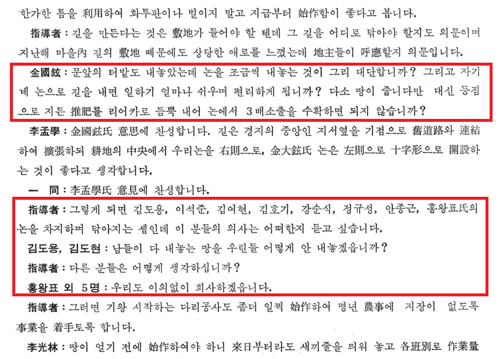

마을경쟁 체제 하에서의 리더십 유형과 솔선수범의 효과
공식적인 직책, 법령, 관습에 기반한 권위를 바탕으로 구성원을 지휘하고 통제합니다.
우월한 전문지식, 경험, 정보를 보유하여 구성원들의 신뢰를 얻고 판단에 영향을 미칩니다.
강렬한 비전과 매력으로 깊은 공감을 불러일으켜 자발적 헌신과 추종을 유도합니다.
구성원 개인의 복지와 성장을 최우선으로 삼아 헌신적으로 지원하고 자립을 돕습니다.
가장 먼저, 앞장서서 구체적인 모범을 보임으로써 주민들의 거부감을 없애고 자발적인 협력을 강력히 이끌어냅니다.
초기 자본과 인프라가 부족했던 농촌 사회에서, 새마을지도자의 헌신과 솔선수범은 주민의 불신을 해소하고 무임승차를 방지하는 가장 강력한 동력이었습니다.
상대 마을과 경쟁할 때, 기여도에 따른 승리 확률과 그에 따른 기대 편익 모형입니다.
※ 기여금과 경쟁 강도에 따른 승리/패배 시의 결과를 직접 확인해 보세요.
아이젠코프 등은 공공재 게임 실험을 통해 '리더의 솔선수범(Leading by example)'이 집단 구성원들의 협력을 어떻게 이끌어내는지 분석했습니다.
